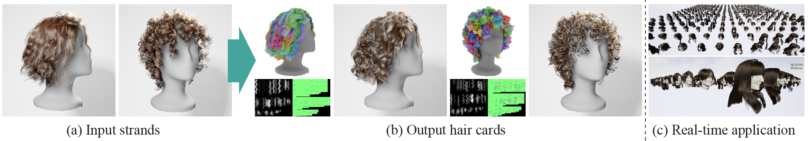

We present a method that automatically converts a strand-based hair model (a) into a hair card model (b), where hair is represented as textured polygon strips for efficient rendering. Our approach enables real-time rendering of all 342 hair models from the USC-Hairsalon database [Hu et al. 2015] within a game engine (c). Even on a laptop PC (MacBook Pro with an M3 Pro chip and 36 GB of unified memory), the scene consistently achieves 30 frames per second.
Abstract
We present a method for automatically converting strand-based hair models into an efficient mesh-based representation, known as hair cards, for real-time rendering. Our method takes strands as inputs and outputs polygon strips with semi-transparent texture, preserving the appearance of the original strand-based hairstyle. To achieve this, we first cluster strands into groups, referred to as wisps, and generate hairstyle-preserving texture maps for each wisp by skinning-based alignment of the strands into a normalized pose in UV space. These textures can further be shared among similar wisps to better utilize the limited texture resolution. Next, polygon strips are fitted to the clustered strands via tailored differentiable rendering that can optimize transparent cluster-colored coverage masks. The proposed method successfully handles a wide range of hair models and outperforms existing approaches in representing volumetric hairstyles such as curly and wavy ones.
Resources
Paper / Video / CodeVideo
Citation
@inproceedings{Tojo2025Strands2Cards,
author = {Tojo, Kenji and Hu, Liwen and Umetani, Nobuyuki and Li, Hao},
title = {Strands2Cards: Automatic Generation of Hair Cards from Strands},
booktitle = {ACM SIGGRAPH Asia 2025 Conference Proceedings},
year = {2025},
series = {SIGGRAPH Asia '25},
doi = {10.1145/3757377.3763864}
}